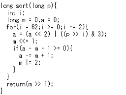
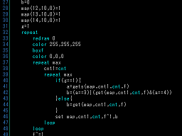
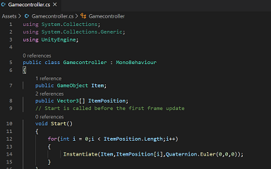
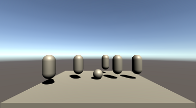
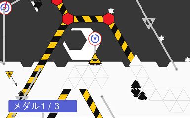
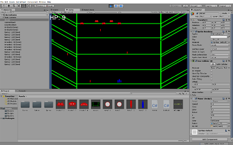

C・C++

Windowsのツールを作るには必須と言えるでしょう。
動きがわかりやすく、このグループの部員のうち多くが使っています。
HSP

インタプリタからできた言語であるため、手軽に扱えます。
少し計算をさせたい、あるいは小さなゲームを作りたいときなどに便利です。
アセンブリ

コンピュータの仕組みをきちんと理解するため、機械語やアセンブリ言語を学ぶこともできます。
本格的なコンパイラの作成を目指しています。
Unity部門
UnityとC#言語を使い、ゲームを製作しているグループです。
なお、Unityはゲーム開発環境の一種です。
複数人でチームを組んで大きなゲームを完成させることを目指しています。
4-6月

新歓期間に製作物を公開し、その後講習を行います。
7-9月

文化祭に向けて作品を作ります。
文化祭

来場者に製作物を公開します。
10-3月

自由にゲームを作り、次年度に向けて構想を練ります。
これまで2D・3D双方で、アクションゲームやシューティングゲームを作りました。
Web部門
主にJavascriptを使い、ツールを作っています。
今のところ、このグループのみに所属する部員はいません。